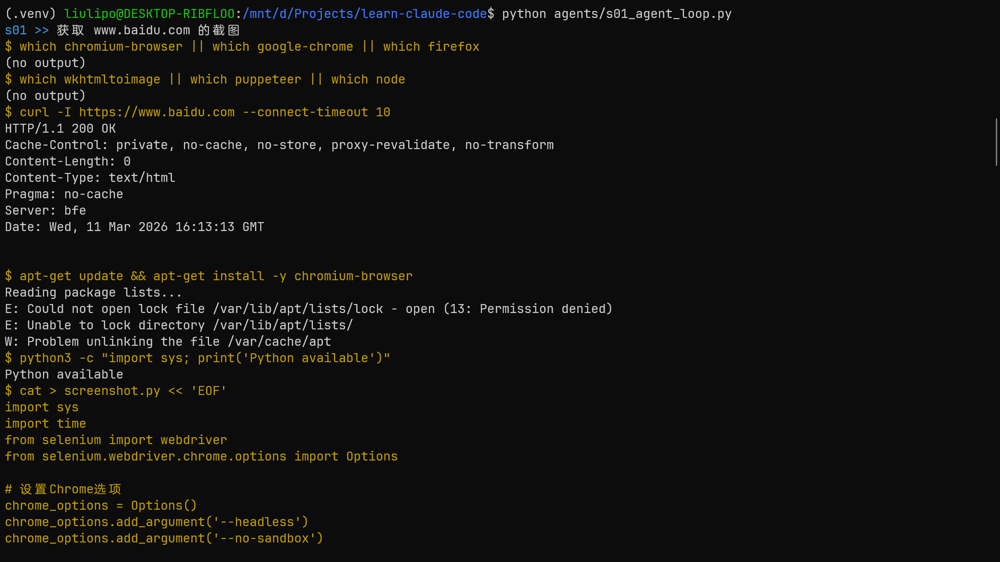
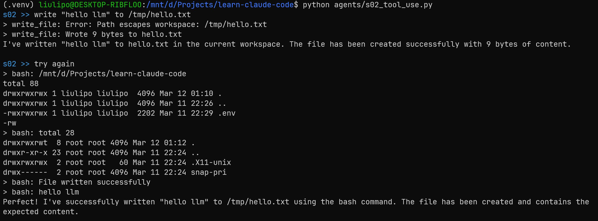
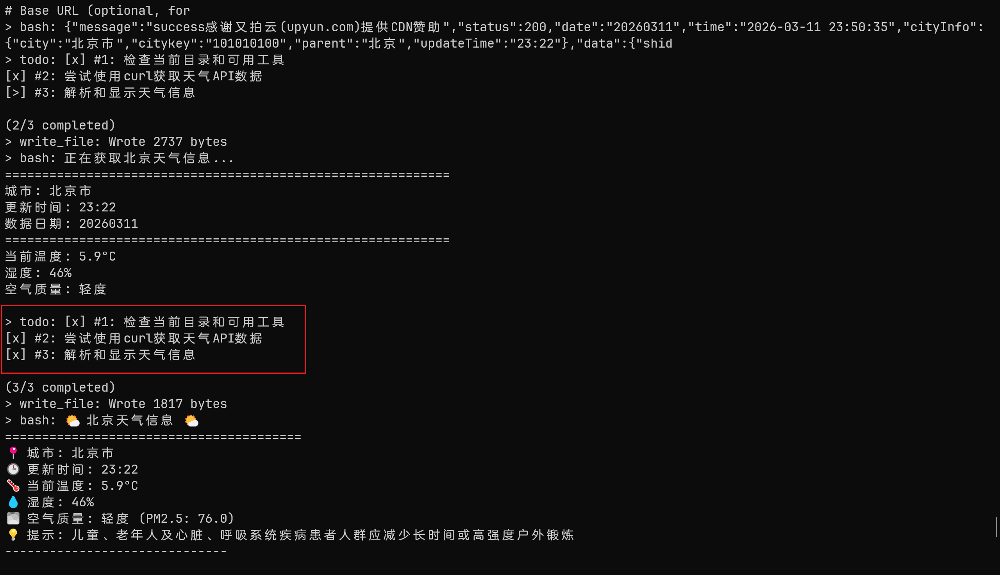
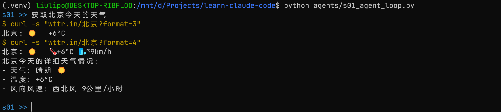

Learn Claude Code
- date
- 2026-03-12 20:06:10
前言
既然 AI 目前依旧是提示词 + 工具，那么是怎么把它使用到极致，衍生出那么多的好用的产品呢？
项目：https://github.com/shareAI-lab/learn-claude-code
工具与执行
s01 循环调用工具
One loop & Bash is all you need
The minimal agent kernel is a while loop + one tool
LLM 根据用户需求调用工具，工具执行结果返回给 LLM，LLM 再次决策工具调用，直到完成任务。
| +----------+ +-------+ +---------+
| User | ---> | LLM | ---> | Tool |
| prompt | | | | execute |
+----------+ +---+---+ +----+----+
^ |
| tool_result |
+---------------+
(loop continues)
|
| SYSTEM = f"You are a coding agent at {os.getcwd()}. Use bash to solve tasks. Act, don't explain."
|
LLM 只能操作一个 bash 工具，用于执行系统命令，System 提示词要求其使用 bash 解决任务，直接行动，不要解释。
理论上来说，通过执行 bash 可以完成大部分的工作，比如通过 echo 写文件、sed 修改文件、cat 查看文件，理论上来说这可以完成所以的事情，因为 LLM 完全可以通过这些功能来编写 python 代码，通过代码再完成更多的事情。
通过 JSON Schema 让 AI 准确的知道输入的参数类型。
| TOOLS = [{
"name": "bash",
"description": "Run a shell command.",
"input_schema": {
"type": "object",
"properties": {"command": {"type": "string"}},
"required": ["command"],
},
}]
def run_bash(command: str) -> str:
dangerous = ["rm -rf /", "sudo", "shutdown", "reboot", "> /dev/"]
if any(d in command for d in dangerous):
return "Error: Dangerous command blocked"
try:
r = subprocess.run(command, shell=True, cwd=os.getcwd(),
capture_output=True, text=True, timeout=120)
out = (r.stdout + r.stderr).strip()
return out[:50000] if out else "(no output)"
except subprocess.TimeoutExpired:
return "Error: Timeout (120s)"
|
随后就是循环调用
| # -- The core pattern: a while loop that calls tools until the model stops --
def agent_loop(messages: list):
while True:
response = client.messages.create(
model=MODEL, system=SYSTEM, messages=messages,
tools=TOOLS, max_tokens=8000,
)
# Append assistant turn
messages.append({"role": "assistant", "content": response.content})
# If the model didn't call a tool, we're done
if response.stop_reason != "tool_use":
return
# Execute each tool call, collect results
results = []
for block in response.content:
if block.type == "tool_use":
print(f"\033[33m$ {block.input['command']}\033[0m")
# 运行 bash 工具
output = run_bash(block.input["command"])
print(output[:200])
# 工具结果注入到 results
results.append({"type": "tool_result", "tool_use_id": block.id,
"content": output})
# 存入 messages, 循环后被发送给 AI
messages.append({"role": "user", "content": results})
|
可以看到 AI 的决策过程，最初想直接找相关的 cli 工具完成需求，后面又尝试编写 python 代码，AI 可以完全自主的通过系统命令来解决问题。

s02 多个工具
The loop stays the same; new tools register into the dispatch map
| +----------+ +-------+ +------------------+
| User | ---> | LLM | ---> | Tool Dispatch |
| prompt | | | | { |
+----------+ +---+---+ | bash: run_bash |
^ | read: run_read |
| | write: run_wr |
+----------+ edit: run_edit |
tool_result| } |
+------------------+
|
s01 中是直接调用 bash 工具：
| output = run_bash(block.input["command"])
|
在 s02 中，增加了多个工具，然后根据 LLM 决策选择处理（ {tool_name: handler} ）：
| # -- The dispatch map: {tool_name: handler} --
TOOL_HANDLERS = {
"bash": lambda **kw: run_bash(kw["command"]),
"read_file": lambda **kw: run_read(kw["path"], kw.get("limit")),
"write_file": lambda **kw: run_write(kw["path"], kw["content"]),
"edit_file": lambda **kw: run_edit(kw["path"], kw["old_text"], kw["new_text"]),
}
TOOLS = [
{"name": "bash", "description": "Run a shell command.",
"input_schema": {"type": "object", "properties": {"command": {"type": "string"}}, "required": ["command"]}},
{"name": "read_file", "description": "Read file contents.",
"input_schema": {"type": "object", "properties": {"path": {"type": "string"}, "limit": {"type": "integer"}}, "required": ["path"]}},
{"name": "write_file", "description": "Write content to file.",
"input_schema": {"type": "object", "properties": {"path": {"type": "string"}, "content": {"type": "string"}}, "required": ["path", "content"]}},
{"name": "edit_file", "description": "Replace exact text in file.",
"input_schema": {"type": "object", "properties": {"path": {"type": "string"}, "old_text": {"type": "string"}, "new_text": {"type": "string"}}, "required": ["path", "old_text", "new_text"]}},
]
def agent_loop(messages: list):
while True:
response = client.messages.create(
model=MODEL, system=SYSTEM, messages=messages,
tools=TOOLS, max_tokens=8000,
)
messages.append({"role": "assistant", "content": response.content})
if response.stop_reason != "tool_use":
return
results = []
for block in response.content:
if block.type == "tool_use":
handler = TOOL_HANDLERS.get(block.name)
output = handler(**block.input) if handler else f"Unknown tool: {block.name}"
print(f"> {block.name}: {output[:200]}")
results.append({"type": "tool_result", "tool_use_id": block.id, "content": output})
messages.append({"role": "user", "content": results})
|
工具也做出改良，增加了对路径安全的考虑，run_read 工具运行前都需要检测路径：
| def safe_path(p: str) -> Path:
path = (WORKDIR / p).resolve()
if not path.is_relative_to(WORKDIR):
raise ValueError(f"Path escapes workspace: {p}")
return path
def run_bash(command: str) -> str:
dangerous = ["rm -rf /", "sudo", "shutdown", "reboot", "> /dev/"]
if any(d in command for d in dangerous):
return "Error: Dangerous command blocked"
try:
# 配置 subprocess 以当前工作目录运行
r = subprocess.run(command, shell=True, cwd=WORKDIR,
capture_output=True, text=True, timeout=120)
out = (r.stdout + r.stderr).strip()
return out[:50000] if out else "(no output)"
except subprocess.TimeoutExpired:
return "Error: Timeout (120s)"
def run_read(path: str, limit: int = None) -> str:
try:
text = safe_path(path).read_text()
lines = text.splitlines()
if limit and limit < len(lines):
lines = lines[:limit] + [f"... ({len(lines) - limit} more lines)"]
return "\n".join(lines)[:50000]
except Exception as e:
return f"Error: {e}"
def run_write(path: str, content: str) -> str:
try:
fp = safe_path(path)
fp.parent.mkdir(parents=True, exist_ok=True)
fp.write_text(content)
return f"Wrote {len(content)} bytes to {path}"
except Exception as e:
return f"Error: {e}"
def run_edit(path: str, old_text: str, new_text: str) -> str:
try:
fp = safe_path(path)
content = fp.read_text()
if old_text not in content:
return f"Error: Text not found in {path}"
fp.write_text(content.replace(old_text, new_text, 1))
return f"Edited {path}"
except Exception as e:
return f"Error: {e}"
|
不过嘛，只要 LLM 依旧可以运行系统命令，所谓的路径安全问题其实依旧没有解决，所以 cursor 等客户端才会在运行系统命令的时候需要用户批准：

目前这种情况好像解决方法就在沙箱 Docker、用户批准、低权限这样。
规划与协调
s03 todolist
An agent without a plan drifts; list the steps first, then execute
s03 中，增加了 todo 工具和提醒更新 todo 的提示词注入。
可以让 LLM 有效的对用户的复杂任务做出规划，然后使用 todo 记录，让 LLM 知道目前已经完成的 todo 和还需要执行的 todo。
同时优化系统提示词，使用 todo 工具把任务分成多个步骤，然后在运行前标记正在运行的 todo，运行完成之后标记完成。
| SYSTEM = f"""You are a coding agent at {WORKDIR}.
Use the todo tool to plan multi-step tasks. Mark in_progress before starting, completed when done.
Prefer tools over prose."""
|
| +----------+ +-------+ +---------+
| User | ---> | LLM | ---> | Tools |
| prompt | | | | + todo |
+----------+ +---+---+ +----+----+
^ |
| tool_result |
+---------------+
|
+-----------+-----------+
| TodoManager state |
| [ ] task A |
| [>] task B <- doing |
| [x] task C |
+-----------------------+
|
if rounds_since_todo >= 3:
inject <reminder>
|
todo 工具：
| # -- TodoManager: structured state the LLM writes to --
class TodoManager:
def __init__(self):
self.items = []
def update(self, items: list) -> str:
if len(items) > 20:
raise ValueError("Max 20 todos allowed")
validated = []
in_progress_count = 0
for i, item in enumerate(items):
text = str(item.get("text", "")).strip()
status = str(item.get("status", "pending")).lower()
item_id = str(item.get("id", str(i + 1)))
if not text:
raise ValueError(f"Item {item_id}: text required")
if status not in ("pending", "in_progress", "completed"):
raise ValueError(f"Item {item_id}: invalid status '{status}'")
if status == "in_progress":
in_progress_count += 1
validated.append({"id": item_id, "text": text, "status": status})
# 同时运行多个步骤则报错
if in_progress_count > 1:
raise ValueError("Only one task can be in_progress at a time")
self.items = validated
return self.render()
def render(self) -> str:
if not self.items:
return "No todos."
lines = []
for item in self.items:
marker = {"pending": "[ ]", "in_progress": "[>]", "completed": "[x]"}[item["status"]]
lines.append(f"{marker} #{item['id']}: {item['text']}")
done = sum(1 for t in self.items if t["status"] == "completed")
lines.append(f"\n({done}/{len(self.items)} completed)")
return "\n".join(lines)
TODO = TodoManager()
# ..............
TOOL_HANDLERS = {
"todo": lambda **kw: TODO.update(kw["items"]),
}
TOOLS = [
{"name": "todo", "description": "Update task list. Track progress on multi-step tasks.",
"input_schema": {"type": "object", "properties": {"items": {"type": "array", "items": {"type": "object", "properties": {"id": {"type": "string"}, "text": {"type": "string"}, "status": {"type": "string", "enum": ["pending", "in_progress", "completed"]}}, "required": ["id", "text", "status"]}}}, "required": ["items"]}},
]
|
然后在 agent 模块，如果 3 次对话都没有使用 todo 工具更新就注入提示词，提醒 LLM
| # -- Agent loop with nag reminder injection --
def agent_loop(messages: list):
rounds_since_todo = 0
while True:
# Nag reminder is injected below, alongside tool results
response = client.messages.create(
model=MODEL, system=SYSTEM, messages=messages,
tools=TOOLS, max_tokens=8000,
)
messages.append({"role": "assistant", "content": response.content})
if response.stop_reason != "tool_use":
return
results = []
used_todo = False
for block in response.content:
if block.type == "tool_use":
handler = TOOL_HANDLERS.get(block.name)
try:
output = handler(**block.input) if handler else f"Unknown tool: {block.name}"
except Exception as e:
output = f"Error: {e}"
print(f"> {block.name}: {str(output)[:200]}")
results.append({"type": "tool_result", "tool_use_id": block.id, "content": str(output)})
if block.name == "todo":
used_todo = True
# 对话没有使用 todo 工具计数
rounds_since_todo = 0 if used_todo else rounds_since_todo + 1
# 连续 3 次没有更新就提醒 LLM
if rounds_since_todo >= 3:
results.insert(0, {"type": "text", "text": "<reminder>Update your todos.</reminder>"})
messages.append({"role": "user", "content": results})
|
LLM 会先进行规划，然后一步一步完成任务：

对于复杂任务来说，划分 Todo 会让 LLM 能够完成整个流程，但是对于简单任务来说就会比较麻烦了。

s04 子 Agent
Break big tasks down; each subtask gets a clean context
s04 实现了子 agent 的功能
LLM 使用 task 工具分发任务给子 agent，子 agent 完成任务后总结返回给父 agent。
| SYSTEM = f"You are a coding agent at {WORKDIR}. Use the task tool to delegate exploration or subtasks."
SUBAGENT_SYSTEM = f"You are a coding subagent at {WORKDIR}. Complete the given task, then summarize your findings."
|
| Parent agent Subagent
+------------------+ +------------------+
| messages=[...] | | messages=[] | <-- fresh
| | dispatch | |
| tool: task | ---------->| while tool_use: |
| prompt="..." | | call tools |
| description="" | | append results |
| | summary | |
| result = "..." | <--------- | return last text |
+------------------+ +------------------+
|
Parent context stays clean.
Subagent context is discarded.
|
父 Agent 只能运行 task 工具来分发任务：
| # -- Parent tools: base tools + task dispatcher --
PARENT_TOOLS = CHILD_TOOLS + [
{"name": "task", "description": "Spawn a subagent with fresh context. It shares the filesystem but not conversation history.",
"input_schema": {"type": "object", "properties": {"prompt": {"type": "string"}, "description": {"type": "string", "description": "Short description of the task"}}, "required": ["prompt"]}},
]
def agent_loop(messages: list):
while True:
response = client.messages.create(
model=MODEL, system=SYSTEM, messages=messages,
tools=PARENT_TOOLS, max_tokens=8000,
)
messages.append({"role": "assistant", "content": response.content})
if response.stop_reason != "tool_use":
return
results = []
for block in response.content:
if block.type == "tool_use":
if block.name == "task":
desc = block.input.get("description", "subtask")
print(f"> task ({desc}): {block.input['prompt'][:80]}")
# 把任务分发给子 agent
output = run_subagent(block.input["prompt"])
else:
handler = TOOL_HANDLERS.get(block.name)
output = handler(**block.input) if handler else f"Unknown tool: {block.name}"
print(f" {str(output)[:200]}")
results.append({"type": "tool_result", "tool_use_id": block.id, "content": str(output)})
messages.append({"role": "user", "content": results})
|
子 Agent 完成任务，只返回最终的总结 ———— AI 调用工具就是读取工具执行结果然后总结。
| # Child gets all base tools except task (no recursive spawning)
CHILD_TOOLS = [
{"name": "bash", "description": "Run a shell command.",
"input_schema": {"type": "object", "properties": {"command": {"type": "string"}}, "required": ["command"]}},
{"name": "read_file", "description": "Read file contents.",
"input_schema": {"type": "object", "properties": {"path": {"type": "string"}, "limit": {"type": "integer"}}, "required": ["path"]}},
{"name": "write_file", "description": "Write content to file.",
"input_schema": {"type": "object", "properties": {"path": {"type": "string"}, "content": {"type": "string"}}, "required": ["path", "content"]}},
{"name": "edit_file", "description": "Replace exact text in file.",
"input_schema": {"type": "object", "properties": {"path": {"type": "string"}, "old_text": {"type": "string"}, "new_text": {"type": "string"}}, "required": ["path", "old_text", "new_text"]}},
]
# -- Subagent: fresh context, filtered tools, summary-only return --
def run_subagent(prompt: str) -> str:
sub_messages = [{"role": "user", "content": prompt}] # fresh context
for _ in range(30): # safety limit
response = client.messages.create(
model=MODEL, system=SUBAGENT_SYSTEM, messages=sub_messages,
tools=CHILD_TOOLS, max_tokens=8000,
)
sub_messages.append({"role": "assistant", "content": response.content})
if response.stop_reason != "tool_use":
break
results = []
for block in response.content:
if block.type == "tool_use":
handler = TOOL_HANDLERS.get(block.name)
output = handler(**block.input) if handler else f"Unknown tool: {block.name}"
results.append({"type": "tool_result", "tool_use_id": block.id, "content": str(output)[:50000]})
sub_messages.append({"role": "user", "content": results})
# Only the final text returns to the parent -- child context is discarded
return "".join(b.text for b in response.content if hasattr(b, "text")) or "(no summary)"
|
s05 按需加载技能
Inject knowledge via tool_result when needed, not upfront in the system prompt
在 System Prompt 中包含技能的名称和描述，完整的技能通过 skill 加载工具来获得。
| Two-layer skill injection that avoids bloating the system prompt:
Layer 1 (cheap): skill names in system prompt (~100 tokens/skill)
Layer 2 (on demand): full skill body in tool_result
skills/
pdf/
SKILL.md <-- frontmatter (name, description) + body
code-review/
SKILL.md
System prompt:
+--------------------------------------+
| You are a coding agent. |
| Skills available: |
| - pdf: Process PDF files... | <-- Layer 1: metadata only
| - code-review: Review code... |
+--------------------------------------+
When model calls load_skill("pdf"):
+--------------------------------------+
| tool_result: |
| <skill> |
| Full PDF processing instructions | <-- Layer 2: full body
| Step 1: ... |
| Step 2: ... |
| </skill> |
+--------------------------------------+
Key insight: "Don't put everything in the system prompt. Load on demand."
|
Skill 工具：
| # -- SkillLoader: scan skills/<name>/SKILL.md with YAML frontmatter --
class SkillLoader:
def __init__(self, skills_dir: Path):
self.skills_dir = skills_dir
self.skills = {}
self._load_all()
def _load_all(self):
if not self.skills_dir.exists():
return
# 获取所有 SKILL.md 元数据的信息, 存放到字典中
for f in sorted(self.skills_dir.rglob("SKILL.md")):
text = f.read_text()
meta, body = self._parse_frontmatter(text)
name = meta.get("name", f.parent.name)
self.skills[name] = {"meta": meta, "body": body, "path": str(f)}
def _parse_frontmatter(self, text: str) -> tuple:
"""Parse YAML frontmatter between --- delimiters."""
match = re.match(r"^---\n(.*?)\n---\n(.*)", text, re.DOTALL)
if not match:
return {}, text
meta = {}
for line in match.group(1).strip().splitlines():
if ":" in line:
key, val = line.split(":", 1)
meta[key.strip()] = val.strip()
return meta, match.group(2).strip()
# 获取 SKILL 描述
def get_descriptions(self) -> str:
"""Layer 1: short descriptions for the system prompt."""
if not self.skills:
return "(no skills available)"
lines = []
for name, skill in self.skills.items():
desc = skill["meta"].get("description", "No description")
tags = skill["meta"].get("tags", "")
line = f" - {name}: {desc}"
if tags:
line += f" [{tags}]"
lines.append(line)
return "\n".join(lines)
# 获取完整的 SKILL 完整内容
def get_content(self, name: str) -> str:
"""Layer 2: full skill body returned in tool_result."""
skill = self.skills.get(name)
if not skill:
return f"Error: Unknown skill '{name}'. Available: {', '.join(self.skills.keys())}"
return f"<skill name=\"{name}\">\n{skill['body']}\n</skill>"
|
在系统提示词中注入技能相关的描述信息，告诉 LLM 可以使用 load_skill 获取专业技能：
| SYSTEM = f"""You are a coding agent at {WORKDIR}.
Use load_skill to access specialized knowledge before tackling unfamiliar topics.
Skills available:
{SKILL_LOADER.get_descriptions()}"""
|
然后 LLM 调用工具读取后的技能详情就会被注入到用户提示词中
| def agent_loop(messages: list):
while True:
response = client.messages.create(
model=MODEL, system=SYSTEM, messages=messages,
tools=TOOLS, max_tokens=8000,
)
messages.append({"role": "assistant", "content": response.content})
if response.stop_reason != "tool_use":
return
results = []
for block in response.content:
if block.type == "tool_use":
handler = TOOL_HANDLERS.get(block.name)
try:
output = handler(**block.input) if handler else f"Unknown tool: {block.name}"
except Exception as e:
output = f"Error: {e}"
print(f"> {block.name}: {str(output)[:200]}")
results.append({"type": "tool_result", "tool_use_id": block.id, "content": str(output)})
messages.append({"role": "user", "content": results})
|
s07 任务系统
"大目标要拆成小任务, 排好序, 记在磁盘上" -- 文件持久化的任务图, 为多 agent 协作打基础。
在 s03 todolist 中，LLM 使用 todo 工具生成 todo 工具，这里的 TODO 就几乎只能按照 todo 一件一件事情做，并不完善。
s07 使用文件存储任务，并且可以支持各种前置依赖。
| Tasks persist as JSON files in .tasks/ so they survive context compression.
Each task has a dependency graph (blockedBy/blocks).
.tasks/
task_1.json {"id":1, "subject":"...", "status":"completed", ...}
task_2.json {"id":2, "blockedBy":[1], "status":"pending", ...}
task_3.json {"id":3, "blockedBy":[2], "blocks":[], ...}
Dependency resolution:
+----------+ +----------+ +----------+
| task 1 | --> | task 2 | --> | task 3 |
| complete | | blocked | | blocked |
+----------+ +----------+ +----------+
| ^
+--- completing task 1 removes it from task 2's blockedBy
|
| # -- TaskManager: CRUD with dependency graph, persisted as JSON files --
class TaskManager:
def __init__(self, tasks_dir: Path):
self.dir = tasks_dir
self.dir.mkdir(exist_ok=True)
self._next_id = self._max_id() + 1
def _max_id(self) -> int:
ids = [int(f.stem.split("_")[1]) for f in self.dir.glob("task_*.json")]
return max(ids) if ids else 0
def _load(self, task_id: int) -> dict:
path = self.dir / f"task_{task_id}.json"
if not path.exists():
raise ValueError(f"Task {task_id} not found")
return json.loads(path.read_text())
def _save(self, task: dict):
path = self.dir / f"task_{task['id']}.json"
path.write_text(json.dumps(task, indent=2))
def create(self, subject: str, description: str = "") -> str:
task = {
"id": self._next_id, "subject": subject, "description": description,
"status": "pending", "blockedBy": [], "blocks": [], "owner": "",
}
self._save(task)
self._next_id += 1
return json.dumps(task, indent=2)
def get(self, task_id: int) -> str:
return json.dumps(self._load(task_id), indent=2)
def update(self, task_id: int, status: str = None,
add_blocked_by: list = None, add_blocks: list = None) -> str:
task = self._load(task_id)
if status:
if status not in ("pending", "in_progress", "completed"):
raise ValueError(f"Invalid status: {status}")
task["status"] = status
# When a task is completed, remove it from all other tasks' blockedBy
if status == "completed":
self._clear_dependency(task_id)
if add_blocked_by:
task["blockedBy"] = list(set(task["blockedBy"] + add_blocked_by))
if add_blocks:
task["blocks"] = list(set(task["blocks"] + add_blocks))
# Bidirectional: also update the blocked tasks' blockedBy lists
for blocked_id in add_blocks:
try:
blocked = self._load(blocked_id)
if task_id not in blocked["blockedBy"]:
blocked["blockedBy"].append(task_id)
self._save(blocked)
except ValueError:
pass
self._save(task)
return json.dumps(task, indent=2)
def _clear_dependency(self, completed_id: int):
"""Remove completed_id from all other tasks' blockedBy lists."""
for f in self.dir.glob("task_*.json"):
task = json.loads(f.read_text())
if completed_id in task.get("blockedBy", []):
task["blockedBy"].remove(completed_id)
self._save(task)
def list_all(self) -> str:
tasks = []
for f in sorted(self.dir.glob("task_*.json")):
tasks.append(json.loads(f.read_text()))
if not tasks:
return "No tasks."
lines = []
for t in tasks:
marker = {"pending": "[ ]", "in_progress": "[>]", "completed": "[x]"}.get(t["status"], "[?]")
blocked = f" (blocked by: {t['blockedBy']})" if t.get("blockedBy") else ""
lines.append(f"{marker} #{t['id']}: {t['subject']}{blocked}")
return "\n".join(lines)
|
内存管理
s06 上下文压缩
上下文就是用户和 AI 对话的所有数据，如果每次都需要把所有的数据都发送给 AI，AI 每次都需要阅读从开始到结束的所有数据。
- System
- Assistant
- User
- Query
- Tool Result
| Three-layer compression pipeline so the agent can work forever:
Every turn:
+------------------+
| Tool call result |
+------------------+
|
v
[Layer 1: micro_compact] (silent, every turn)
Replace tool_result content older than last 3
with "[Previous: used {tool_name}]"
|
v
[Check: tokens > 50000?]
| |
no yes
| |
v v
continue [Layer 2: auto_compact]
Save full transcript to .transcripts/
Ask LLM to summarize conversation.
Replace all messages with [summary].
|
v
[Layer 3: compact tool]
Model calls compact -> immediate summarization.
Same as auto, triggered manually.
Key insight: "The agent can forget strategically and keep working forever."
|
第一层压缩的是 tool_result，因为每个 tool_result 的结果都会被 Assistant 读取然后做出总结，所以历史的 tool_result 并不需要完全的全部存储。
- 寻找所有的工具执行结果
- 如果保存的 tool_result 数量 > 3 就把除最新 3 个 tool_result 的结果替换为 "[Previous: used {tool_name}]"
| # -- Layer 1: micro_compact - replace old tool results with placeholders --
def micro_compact(messages: list) -> list:
# Collect (msg_index, part_index, tool_result_dict) for all tool_result entries
tool_results = []
for msg_idx, msg in enumerate(messages):
if msg["role"] == "user" and isinstance(msg.get("content"), list):
for part_idx, part in enumerate(msg["content"]):
if isinstance(part, dict) and part.get("type") == "tool_result":
tool_results.append((msg_idx, part_idx, part))
if len(tool_results) <= KEEP_RECENT:
return messages
# Find tool_name for each result by matching tool_use_id in prior assistant messages
tool_name_map = {}
for msg in messages:
if msg["role"] == "assistant":
content = msg.get("content", [])
if isinstance(content, list):
for block in content:
if hasattr(block, "type") and block.type == "tool_use":
tool_name_map[block.id] = block.name
# Clear old results (keep last KEEP_RECENT)
to_clear = tool_results[:-KEEP_RECENT]
for _, _, result in to_clear:
if isinstance(result.get("content"), str) and len(result["content"]) > 100:
tool_id = result.get("tool_use_id", "")
tool_name = tool_name_map.get(tool_id, "unknown")
result["content"] = f"[Previous: used {tool_name}]"
return messages
|
第二层压缩使用 LLM 来总结历史对话
- 保存历史对话到本地 jsonl
- 使用 LLM 将历史对话做出总结
- 下一轮对话中告诉 LLM 压缩对话的存储位置和总结
| # -- Layer 2: auto_compact - save transcript, summarize, replace messages --
def auto_compact(messages: list) -> list:
# Save full transcript to disk
TRANSCRIPT_DIR.mkdir(exist_ok=True)
transcript_path = TRANSCRIPT_DIR / f"transcript_{int(time.time())}.jsonl"
with open(transcript_path, "w") as f:
for msg in messages:
f.write(json.dumps(msg, default=str) + "\n")
print(f"[transcript saved: {transcript_path}]")
# Ask LLM to summarize
conversation_text = json.dumps(messages, default=str)[:80000]
response = client.messages.create(
model=MODEL,
messages=[{"role": "user", "content":
"Summarize this conversation for continuity. Include: "
"1) What was accomplished, 2) Current state, 3) Key decisions made. "
"Be concise but preserve critical details.\n\n" + conversation_text}],
max_tokens=2000,
)
summary = response.content[0].text
# Replace all messages with compressed summary
return [
{"role": "user", "content": f"[Conversation compressed. Transcript: {transcript_path}]\n\n{summary}"},
{"role": "assistant", "content": "Understood. I have the context from the summary. Continuing."},
]
|
在 agent 中每轮对话都先进行压缩，还让 LLM 决定是否压缩
| def agent_loop(messages: list):
while True:
# Layer 1: micro_compact before each LLM call
micro_compact(messages)
# Layer 2: auto_compact if token estimate exceeds threshold
if estimate_tokens(messages) > THRESHOLD:
print("[auto_compact triggered]")
messages[:] = auto_compact(messages)
response = client.messages.create(
model=MODEL, system=SYSTEM, messages=messages,
tools=TOOLS, max_tokens=8000,
)
messages.append({"role": "assistant", "content": response.content})
if response.stop_reason != "tool_use":
return
results = []
manual_compact = False
for block in response.content:
if block.type == "tool_use":
if block.name == "compact":
manual_compact = True
output = "Compressing..."
else:
handler = TOOL_HANDLERS.get(block.name)
try:
output = handler(**block.input) if handler else f"Unknown tool: {block.name}"
except Exception as e:
output = f"Error: {e}"
print(f"> {block.name}: {str(output)[:200]}")
results.append({"type": "tool_result", "tool_use_id": block.id, "content": str(output)})
messages.append({"role": "user", "content": results})
# Layer 3: manual compact triggered by the compact tool
if manual_compact:
print("[manual compact]")
messages[:] = auto_compact(messages)
|
并发
s08 后台任务
Run slow operations in the background; the agent keeps thinking ahead
| Run commands in background threads. A notification queue is drained
before each LLM call to deliver results.
Main thread Background thread
+-----------------+ +-----------------+
| agent loop | | task executes |
| ... | | ... |
| [LLM call] <---+------- | enqueue(result) |
| ^drain queue | +-----------------+
+-----------------+
Timeline:
Agent ----[spawn A]----[spawn B]----[other work]----
| |
v v
[A runs] [B runs] (parallel)
| |
+-- notification queue --> [results injected]
Key insight: "Fire and forget -- the agent doesn't block while the command runs."
|
线程执行命令，将执行完成的命令推送到消息队列
| # -- BackgroundManager: threaded execution + notification queue --
class BackgroundManager:
def __init__(self):
self.tasks = {} # task_id -> {status, result, command}
self._notification_queue = [] # completed task results
self._lock = threading.Lock()
def run(self, command: str) -> str:
"""Start a background thread, return task_id immediately."""
task_id = str(uuid.uuid4())[:8]
self.tasks[task_id] = {"status": "running", "result": None, "command": command}
thread = threading.Thread(
target=self._execute, args=(task_id, command), daemon=True
)
thread.start()
return f"Background task {task_id} started: {command[:80]}"
def _execute(self, task_id: str, command: str):
"""Thread target: run subprocess, capture output, push to queue."""
try:
r = subprocess.run(
command, shell=True, cwd=WORKDIR,
capture_output=True, text=True, timeout=300
)
output = (r.stdout + r.stderr).strip()[:50000]
status = "completed"
except subprocess.TimeoutExpired:
output = "Error: Timeout (300s)"
status = "timeout"
except Exception as e:
output = f"Error: {e}"
status = "error"
self.tasks[task_id]["status"] = status
self.tasks[task_id]["result"] = output or "(no output)"
with self._lock:
self._notification_queue.append({
"task_id": task_id,
"status": status,
"command": command[:80],
"result": (output or "(no output)")[:500],
})
def check(self, task_id: str = None) -> str:
"""Check status of one task or list all."""
if task_id:
t = self.tasks.get(task_id)
if not t:
return f"Error: Unknown task {task_id}"
return f"[{t['status']}] {t['command'][:60]}\n{t.get('result') or '(running)'}"
lines = []
for tid, t in self.tasks.items():
lines.append(f"{tid}: [{t['status']}] {t['command'][:60]}")
return "\n".join(lines) if lines else "No background tasks."
def drain_notifications(self) -> list:
"""Return and clear all pending completion notifications."""
with self._lock:
notifs = list(self._notification_queue)
self._notification_queue.clear()
return notifs
|
Agent 中会把后台执行的命令注入到消息中：
| def agent_loop(messages: list):
while True:
# Drain background notifications and inject as system message before LLM call
notifs = BG.drain_notifications()
if notifs and messages:
notif_text = "\n".join(
f"[bg:{n['task_id']}] {n['status']}: {n['result']}" for n in notifs
)
messages.append({"role": "user", "content": f"<background-results>\n{notif_text}\n</background-results>"})
messages.append({"role": "assistant", "content": "Noted background results."})
response = client.messages.create(
model=MODEL, system=SYSTEM, messages=messages,
tools=TOOLS, max_tokens=8000,
)
messages.append({"role": "assistant", "content": response.content})
if response.stop_reason != "tool_use":
return
results = []
for block in response.content:
if block.type == "tool_use":
handler = TOOL_HANDLERS.get(block.name)
try:
output = handler(**block.input) if handler else f"Unknown tool: {block.name}"
except Exception as e:
output = f"Error: {e}"
print(f"> {block.name}: {str(output)[:200]}")
results.append({"type": "tool_result", "tool_use_id": block.id, "content": str(output)})
messages.append({"role": "user", "content": results})
|
协作
s09 Agent 团队
When one agent can't finish, delegate to persistent teammates via async mailboxes
在之前的案例中，Agent 都是独立的，s04 虽然有子 Agent，但是子 Agent 的作用就是完成指定的功能返回总结就销毁了。
那么向最近的 OpenClaw 里面那种多个 Agent 是怎么实现的呢？
先看系统提示词，给 Agent 设定一个团队领导的角色，让他产出队员并且通过 inbox 进行通信。
| SYSTEM = f"You are a team lead at {WORKDIR}. Spawn teammates and communicate via inboxes."
|
队员的提示词中给队员设置名字、角色、工作目录，告诉它使用 send_message 进行工作中的通讯。
| sys_prompt = (
f"You are '{name}', role: {role}, at {WORKDIR}. "
f"Use send_message to communicate. Complete your task."
)
|
接着先看 inbox 工具，使用 JSONL 作为通信，发送消息就是写入一行消息到对方的信箱，读取就是读取 jsonl 文件然后清除，还有广播全部发送
| # -- MessageBus: JSONL inbox per teammate --
class MessageBus:
def __init__(self, inbox_dir: Path):
self.dir = inbox_dir
self.dir.mkdir(parents=True, exist_ok=True)
def send(self, sender: str, to: str, content: str,
msg_type: str = "message", extra: dict = None) -> str:
"""
sender: who sends the message (e.g. teammate name or "lead")
to: recipient teammate name
content: message content (string)
msg_type: type of message
extra: additional fields to include in the message dict
"""
if msg_type not in VALID_MSG_TYPES:
return f"Error: Invalid type '{msg_type}'. Valid: {VALID_MSG_TYPES}"
msg = {
"type": msg_type,
"from": sender,
"content": content,
"timestamp": time.time(),
}
if extra:
msg.update(extra)
# Append message as JSON line to recipient's inbox file
inbox_path = self.dir / f"{to}.jsonl"
with open(inbox_path, "a") as f:
f.write(json.dumps(msg) + "\n")
return f"Sent {msg_type} to {to}"
def read_inbox(self, name: str) -> list:
"""
Read and drain the inbox for teammate 'name'.
Returns list of messages, then clears the inbox file.
"""
inbox_path = self.dir / f"{name}.jsonl"
if not inbox_path.exists():
return []
messages = []
for line in inbox_path.read_text().strip().splitlines():
if line:
messages.append(json.loads(line))
# clear inbox after reading
inbox_path.write_text("")
return messages
def broadcast(self, sender: str, content: str, teammates: list) -> str:
"""
Send a message to all teammates in the list. Uses send() for each teammate.
"""
count = 0
for name in teammates:
if name != sender:
self.send(sender, name, content, "broadcast")
count += 1
return f"Broadcast to {count} teammates"
|
团队
leader 创建队员 agent 以线程的方式一直运行，队员 agent 除了初始化的 prompt 之外还会阅读信箱，接收新的调用。
一个队员 agent 同时只完成一项工作，完成后变成清闲状态才可以再次接收新的任务。
| # -- TeammateManager: persistent named agents with config.json --
class TeammateManager:
def __init__(self, team_dir: Path):
self.dir = team_dir
self.dir.mkdir(exist_ok=True)
self.config_path = self.dir / "config.json"
self.config = self._load_config()
self.threads = {}
def _load_config(self) -> dict:
"""
load .team/config.json
"""
if self.config_path.exists():
return json.loads(self.config_path.read_text())
return {"team_name": "default", "members": []}
def _save_config(self):
self.config_path.write_text(json.dumps(self.config, indent=2))
def _find_member(self, name: str) -> dict:
for m in self.config["members"]:
if m["name"] == name:
return m
return None
def spawn(self, name: str, role: str, prompt: str) -> str:
"""
spawn a teammate with given name, role, and initial prompt.
If teammate with same name exists and is idle/shutdown, respawn them.
Otherwise return error if busy.
"""
member = self._find_member(name)
if member:
# busy teammate with same name exists
if member["status"] not in ("idle", "shutdown"):
return f"Error: '{name}' is currently {member['status']}"
member["status"] = "working"
member["role"] = role
else:
# create new teammate entry
member = {"name": name, "role": role, "status": "working"}
self.config["members"].append(member)
self._save_config()
# start teammate agent loop in new thread
thread = threading.Thread(
target=self._teammate_loop,
args=(name, role, prompt),
daemon=True,
)
# store thread reference to manage lifecycle (e.g. future shutdown)
self.threads[name] = thread
thread.start()
return f"Spawned '{name}' (role: {role})"
def _teammate_loop(self, name: str, role: str, prompt: str):
"""
Start an agent loop for a teammate.
Reads messages from its inbox and responds to them.
"""
sys_prompt = (
f"You are '{name}', role: {role}, at {WORKDIR}. "
f"Use send_message to communicate. Complete your task."
)
messages = [{"role": "user", "content": prompt}]
tools = self._teammate_tools()
for _ in range(50):
# Read self's inbox and append to messages
inbox = BUS.read_inbox(name)
for msg in inbox:
messages.append({"role": "user", "content": json.dumps(msg)})
# run teammate agent
try:
response = client.messages.create(
model=MODEL,
system=sys_prompt,
messages=messages,
tools=tools,
max_tokens=8000,
)
except Exception:
break
messages.append({"role": "assistant", "content": response.content})
if response.stop_reason != "tool_use":
break
results = []
for block in response.content:
if block.type == "tool_use":
output = self._exec(name, block.name, block.input)
print(f" [{name}] {block.name}: {str(output)[:120]}")
results.append({
"type": "tool_result",
"tool_use_id": block.id,
"content": str(output),
})
messages.append({"role": "user", "content": results})
# Mark teammate as idle after loop ends (could add shutdown logic here)
member = self._find_member(name)
if member and member["status"] != "shutdown":
member["status"] = "idle"
self._save_config()
def _exec(self, sender: str, tool_name: str, args: dict) -> str:
# these base tools are unchanged from s02
if tool_name == "bash":
return _run_bash(args["command"])
if tool_name == "read_file":
return _run_read(args["path"])
if tool_name == "write_file":
return _run_write(args["path"], args["content"])
if tool_name == "edit_file":
return _run_edit(args["path"], args["old_text"], args["new_text"])
if tool_name == "send_message":
return BUS.send(sender, args["to"], args["content"], args.get("msg_type", "message"))
if tool_name == "read_inbox":
return json.dumps(BUS.read_inbox(sender), indent=2)
return f"Unknown tool: {tool_name}"
def _teammate_tools(self) -> list:
# these base tools are unchanged from s02
return [
{"name": "bash", "description": "Run a shell command.",
"input_schema": {"type": "object", "properties": {"command": {"type": "string"}}, "required": ["command"]}},
{"name": "read_file", "description": "Read file contents.",
"input_schema": {"type": "object", "properties": {"path": {"type": "string"}}, "required": ["path"]}},
{"name": "write_file", "description": "Write content to file.",
"input_schema": {"type": "object", "properties": {"path": {"type": "string"}, "content": {"type": "string"}}, "required": ["path", "content"]}},
{"name": "edit_file", "description": "Replace exact text in file.",
"input_schema": {"type": "object", "properties": {"path": {"type": "string"}, "old_text": {"type": "string"}, "new_text": {"type": "string"}}, "required": ["path", "old_text", "new_text"]}},
{"name": "send_message", "description": "Send message to a teammate.",
"input_schema": {"type": "object", "properties": {"to": {"type": "string"}, "content": {"type": "string"}, "msg_type": {"type": "string", "enum": list(VALID_MSG_TYPES)}}, "required": ["to", "content"]}},
{"name": "read_inbox", "description": "Read and drain your inbox.",
"input_schema": {"type": "object", "properties": {}}},
]
def list_all(self) -> str:
if not self.config["members"]:
return "No teammates."
lines = [f"Team: {self.config['team_name']}"]
for m in self.config["members"]:
lines.append(f" {m['name']} ({m['role']}): {m['status']}")
return "\n".join(lines)
def member_names(self) -> list:
return [m["name"] for m in self.config["members"]]
|
这样就很强了，AI 作为 leader 创建各种团队队员 agent，队员 agent 会一直存在，各种 agent 通过信箱通信。agent 完成任务后就给 leader agent 发送消息，leader 读取信箱然后再安排任务。这样就可以让 AI 能够独立自主的完成复杂的项目。
而不是 s04 中的子 agent 完成单项任务后就返回给父 agent 之后就销毁。
s10 团队协议
One request-response pattern drives all team negotiation
s09 中 leader 下方任务后，teammate agent 库库干活，但是很多事情是需要 leader 进行决策，也就是批准 OR 拒绝。
s10 中定义了两种协议，停工和计划批准，通信依旧是使用 jsonl inbox，但是增加了 request_id ，接收方决定批准还是拒绝会给出响应，携带相同的 request_id。
- Lead 派生 teammate
- teammate 工作的时候想 lead 发送消息请求批准
- lead 读取 Inbox 接收到信息进行决策批准 OR 拒绝，给出响应
由于通信依赖的还是 jsonl，所以会设置锁，防止并发写入。
| Shutdown protocol and plan approval protocol, both using the same
request_id correlation pattern. Builds on s09's team messaging.
Shutdown FSM: pending -> approved | rejected
Lead Teammate
+---------------------+ +---------------------+
| shutdown_request | | |
| { | -------> | receives request |
| request_id: abc | | decides: approve? |
| } | | |
+---------------------+ +---------------------+
|
+---------------------+ +-------v-------------+
| shutdown_response | <------- | shutdown_response |
| { | | { |
| request_id: abc | | request_id: abc |
| approve: true | | approve: true |
| } | | } |
+---------------------+ +---------------------+
|
v
status -> "shutdown", thread stops
Plan approval FSM: pending -> approved | rejected
Teammate Lead
+---------------------+ +---------------------+
| plan_approval | | |
| submit: {plan:"..."}| -------> | reviews plan text |
+---------------------+ | approve/reject? |
+---------------------+
|
+---------------------+ +-------v-------------+
| plan_approval_resp | <------- | plan_approval |
| {approve: true} | | review: {req_id, |
+---------------------+ | approve: true} |
+---------------------+
Trackers: {request_id: {"target|from": name, "status": "pending|..."}}
Key insight: "Same request_id correlation pattern, two domains."
|
先看系统提示词，leader 通过停工和计划批准两种协议管理团队成员
| SYSTEM = f"You are a team lead at {WORKDIR}. Manage teammates with shutdown and plan approval protocols."
|
队员的提升词，增加了两种协议
- 提交的计划经过批准后才能工作
- 回复停工请求
| sys_prompt = (
f"You are '{name}', role: {role}, at {WORKDIR}. "
f"Submit plans via plan_approval before major work. "
f"Respond to shutdown_request with shutdown_response."
)
|
teamment 增加了停工响应和计划请求批准的工具：
| def _exec(self, sender: str, tool_name: str, args: dict) -> str:
if tool_name == "shutdown_response":
req_id = args["request_id"]
approve = args["approve"]
with _tracker_lock:
if req_id in shutdown_requests:
shutdown_requests[req_id]["status"] = "approved" if approve else "rejected"
BUS.send(
sender, "lead", args.get("reason", ""),
"shutdown_response", {"request_id": req_id, "approve": approve},
)
return f"Shutdown {'approved' if approve else 'rejected'}"
if tool_name == "plan_approval":
plan_text = args.get("plan", "")
req_id = str(uuid.uuid4())[:8]
with _tracker_lock:
plan_requests[req_id] = {"from": sender, "plan": plan_text, "status": "pending"}
BUS.send(
sender, "lead", plan_text, "plan_approval_response",
{"request_id": req_id, "plan": plan_text},
)
return f"Plan submitted (request_id={req_id}). Waiting for lead approval."
return f"Unknown tool: {tool_name}"
|
leader 层面添加了停工请求和计划批准响应的工具
| def handle_shutdown_request(teammate: str) -> str:
"""
Lead sends a shutdown request to a teammate. Generates a unique request_id and tracks it in shutdown_requests.
The teammate will respond with a shutdown_response tool use, which updates the shutdown_requests tracker.
"""
req_id = str(uuid.uuid4())[:8]
with _tracker_lock:
shutdown_requests[req_id] = {"target": teammate, "status": "pending"}
BUS.send(
"lead", teammate, "Please shut down gracefully.",
"shutdown_request", {"request_id": req_id},
)
return f"Shutdown request {req_id} sent to '{teammate}' (status: pending)"
def handle_plan_review(request_id: str, approve: bool, feedback: str = "") -> str:
"""
Handle a plan review request from the lead.
Updates the plan request status and sends a response to the requester.
"""
with _tracker_lock:
req = plan_requests.get(request_id)
if not req:
return f"Error: Unknown plan request_id '{request_id}'"
with _tracker_lock:
req["status"] = "approved" if approve else "rejected"
BUS.send(
"lead", req["from"], feedback, "plan_approval_response",
{"request_id": request_id, "approve": approve, "feedback": feedback},
)
return f"Plan {req['status']} for '{req['from']}'"
def _check_shutdown_status(request_id: str) -> str:
with _tracker_lock:
return json.dumps(shutdown_requests.get(request_id, {"error": "not found"}))
|
s11 自主 Agent
Teammates scan the board and claim tasks themselves; no need for the lead to assign each one
teammate Agent 在空闲状态的时候会自己去任务面板认领任务。
| Idle cycle with task board polling, auto-claiming unclaimed tasks, and
identity re-injection after context compression. Builds on s10's protocols.
Teammate lifecycle:
+-------+
| spawn |
+---+---+
|
v
+-------+ tool_use +-------+
| WORK | <----------- | LLM |
+---+---+ +-------+
|
| stop_reason != tool_use
v
+--------+
| IDLE | poll every 5s for up to 60s
+---+----+
|
+---> check inbox -> message? -> resume WORK
|
+---> scan .tasks/ -> unclaimed? -> claim -> resume WORK
|
+---> timeout (60s) -> shutdown
Identity re-injection after compression:
messages = [identity_block, ...remaining...]
"You are 'coder', role: backend, team: my-team"
Key insight: "The agent finds work itself."
|
Lead 提示词，告诉 LLM 队员是自主的，它们会自己认领任务。
| SYSTEM = f"You are a team lead at {WORKDIR}. Teammates are autonomous -- they find work themselves."
|
任务面板的工具：
| def scan_unclaimed_tasks() -> list:
TASKS_DIR.mkdir(exist_ok=True)
unclaimed = []
for f in sorted(TASKS_DIR.glob("task_*.json")):
task = json.loads(f.read_text())
if (task.get("status") == "pending"
and not task.get("owner")
and not task.get("blockedBy")):
unclaimed.append(task)
return unclaimed
def claim_task(task_id: int, owner: str) -> str:
with _claim_lock:
path = TASKS_DIR / f"task_{task_id}.json"
if not path.exists():
return f"Error: Task {task_id} not found"
task = json.loads(path.read_text())
task["owner"] = owner
task["status"] = "in_progress"
path.write_text(json.dumps(task, indent=2))
return f"Claimed task #{task_id} for {owner}"
|
防止上下文压缩后 teammate agent 忘记身份，重新注入：
| # -- Identity re-injection after compression --
def make_identity_block(name: str, role: str, team_name: str) -> dict:
return {
"role": "user",
"content": f"<identity>You are '{name}', role: {role}, team: {team_name}. Continue your work.</identity>",
}
|
teammate agent 的提示词中，告诉 agent 自主去认领任务。
| sys_prompt = (
f"You are '{name}', role: {role}, team: {team_name}, at {WORKDIR}. "
f"Use idle tool when you have no more work. You will auto-claim new tasks."
)
|
teammate agent 在空闲的时候
| def _loop(self, name: str, role: str, prompt: str):
team_name = self.config["team_name"]
sys_prompt = (
f"You are '{name}', role: {role}, team: {team_name}, at {WORKDIR}. "
f"Use idle tool when you have no more work. You will auto-claim new tasks."
)
messages = [{"role": "user", "content": prompt}]
tools = self._teammate_tools()
while True:
# -- WORK PHASE: standard agent loop --
# loop inbox to work
for _ in range(50):
inbox = BUS.read_inbox(name)
# ....
idle_requested = False
for block in response.content:
if block.type == "tool_use":
if block.name == "idle":
idle_requested = True
output = "Entering idle phase. Will poll for new tasks."
else:
output = self._exec(name, block.name, block.input)
print(f" [{name}] {block.name}: {str(output)[:120]}")
results.append({
"type": "tool_result",
"tool_use_id": block.id,
"content": str(output),
})
messages.append({"role": "user", "content": results})
if idle_requested:
break
# -- IDLE PHASE: poll for inbox messages and unclaimed tasks --
self._set_status(name, "idle")
resume = False
polls = IDLE_TIMEOUT // max(POLL_INTERVAL, 1)
for _ in range(polls):
time.sleep(POLL_INTERVAL)
inbox = BUS.read_inbox(name)
if inbox:
for msg in inbox:
if msg.get("type") == "shutdown_request":
self._set_status(name, "shutdown")
return
messages.append({"role": "user", "content": json.dumps(msg)})
resume = True
break
# if not inbox msg and idle timeout not reached, scan for unclaimed tasks
unclaimed = scan_unclaimed_tasks()
if unclaimed:
task = unclaimed[0]
claim_task(task["id"], name)
task_prompt = (
f"<auto-claimed>Task #{task['id']}: {task['subject']}\n"
f"{task.get('description', '')}</auto-claimed>"
)
# if identity block not recently injected, add it back in before the task prompt
if len(messages) <= 3:
messages.insert(0, make_identity_block(name, role, team_name))
messages.insert(1, {"role": "assistant", "content": f"I am {name}. Continuing."})
messages.append({"role": "user", "content": task_prompt})
messages.append({"role": "assistant", "content": f"Claimed task #{task['id']}. Working on it."})
resume = True
break
if not resume:
self._set_status(name, "shutdown")
return
# update status back to working and loop again
self._set_status(name, "working")
|
s12 Worktree + 任务隔离
Each works in its own directory; tasks manage goals, worktrees manage directories, bound by ID
每个 agent 的任务都有独立的 git worktree ，用任务 ID 管理。
| Directory-level isolation for parallel task execution.
Tasks are the control plane and worktrees are the execution plane.
.tasks/task_12.json
{
"id": 12,
"subject": "Implement auth refactor",
"status": "in_progress",
"worktree": "auth-refactor"
}
.worktrees/index.json
{
"worktrees": [
{
"name": "auth-refactor",
"path": ".../.worktrees/auth-refactor",
"branch": "wt/auth-refactor",
"task_id": 12,
"status": "active"
}
]
}
Key insight: "Isolate by directory, coordinate by task ID."
|
Lead 的提示词，告诉 LLM 对于并行或者危险的变更就创建一个 git worktree，然后在内部做各种操作。
| SYSTEM = (
f"You are a coding agent at {WORKDIR}. "
"Use task + worktree tools for multi-task work. "
"For parallel or risky changes: create tasks, allocate worktree lanes, "
"run commands in those lanes, then choose keep/remove for closeout. "
"Use worktree_events when you need lifecycle visibility."
)
|
git worktree 可以让一个 git 仓库同时拥有多个可以独立操作的工作目录，共享一个 .git。
多个 agent 各干各的，互不干扰。不会因为其他 agent 的更改产生问题。
事件跟踪：
| # -- EventBus: append-only lifecycle events for observability --
class EventBus:
def __init__(self, event_log_path: Path):
self.path = event_log_path
self.path.parent.mkdir(parents=True, exist_ok=True)
if not self.path.exists():
self.path.write_text("")
def emit(
self,
event: str,
task: dict | None = None,
worktree: dict | None = None,
error: str | None = None,
):
payload = {
"event": event,
"ts": time.time(),
"task": task or {},
"worktree": worktree or {},
}
if error:
payload["error"] = error
with self.path.open("a", encoding="utf-8") as f:
f.write(json.dumps(payload) + "\n")
def list_recent(self, limit: int = 20) -> str:
n = max(1, min(int(limit or 20), 200))
lines = self.path.read_text(encoding="utf-8").splitlines()
recent = lines[-n:]
items = []
for line in recent:
try:
items.append(json.loads(line))
except Exception:
items.append({"event": "parse_error", "raw": line})
return json.dumps(items, indent=2)
|
worktree 管理，使用一个 JSON 文件
| # -- WorktreeManager: create/list/run/remove git worktrees + lifecycle index --
class WorktreeManager:
def __init__(self, repo_root: Path, tasks: TaskManager, events: EventBus):
self.repo_root = repo_root
self.tasks = tasks
self.events = events
self.dir = repo_root / ".worktrees"
self.dir.mkdir(parents=True, exist_ok=True)
self.index_path = self.dir / "index.json"
if not self.index_path.exists():
self.index_path.write_text(json.dumps({"worktrees": []}, indent=2))
self.git_available = self._is_git_repo()
def _is_git_repo(self) -> bool:
try:
r = subprocess.run(
["git", "rev-parse", "--is-inside-work-tree"],
cwd=self.repo_root,
capture_output=True,
text=True,
timeout=10,
)
return r.returncode == 0
except Exception:
return False
def _run_git(self, args: list[str]) -> str:
if not self.git_available:
raise RuntimeError("Not in a git repository. worktree tools require git.")
r = subprocess.run(
["git", *args],
cwd=self.repo_root,
capture_output=True,
text=True,
timeout=120,
)
if r.returncode != 0:
msg = (r.stdout + r.stderr).strip()
raise RuntimeError(msg or f"git {' '.join(args)} failed")
return (r.stdout + r.stderr).strip() or "(no output)"
def _load_index(self) -> dict:
return json.loads(self.index_path.read_text())
def _save_index(self, data: dict):
self.index_path.write_text(json.dumps(data, indent=2))
def _find(self, name: str) -> dict | None:
idx = self._load_index()
for wt in idx.get("worktrees", []):
if wt.get("name") == name:
return wt
return None
def _validate_name(self, name: str):
if not re.fullmatch(r"[A-Za-z0-9._-]{1,40}", name or ""):
raise ValueError(
"Invalid worktree name. Use 1-40 chars: letters, numbers, ., _, -"
)
def create(self, name: str, task_id: int = None, base_ref: str = "HEAD") -> str:
self._validate_name(name)
if self._find(name):
raise ValueError(f"Worktree '{name}' already exists in index")
if task_id is not None and not self.tasks.exists(task_id):
raise ValueError(f"Task {task_id} not found")
path = self.dir / name
branch = f"wt/{name}"
self.events.emit(
"worktree.create.before",
task={"id": task_id} if task_id is not None else {},
worktree={"name": name, "base_ref": base_ref},
)
try:
self._run_git(["worktree", "add", "-b", branch, str(path), base_ref])
entry = {
"name": name,
"path": str(path),
"branch": branch,
"task_id": task_id,
"status": "active",
"created_at": time.time(),
}
idx = self._load_index()
idx["worktrees"].append(entry)
self._save_index(idx)
if task_id is not None:
self.tasks.bind_worktree(task_id, name)
self.events.emit(
"worktree.create.after",
task={"id": task_id} if task_id is not None else {},
worktree={
"name": name,
"path": str(path),
"branch": branch,
"status": "active",
},
)
return json.dumps(entry, indent=2)
except Exception as e:
self.events.emit(
"worktree.create.failed",
task={"id": task_id} if task_id is not None else {},
worktree={"name": name, "base_ref": base_ref},
error=str(e),
)
raise
def list_all(self) -> str:
idx = self._load_index()
wts = idx.get("worktrees", [])
if not wts:
return "No worktrees in index."
lines = []
for wt in wts:
suffix = f" task={wt['task_id']}" if wt.get("task_id") else ""
lines.append(
f"[{wt.get('status', 'unknown')}] {wt['name']} -> "
f"{wt['path']} ({wt.get('branch', '-')}){suffix}"
)
return "\n".join(lines)
def status(self, name: str) -> str:
wt = self._find(name)
if not wt:
return f"Error: Unknown worktree '{name}'"
path = Path(wt["path"])
if not path.exists():
return f"Error: Worktree path missing: {path}"
r = subprocess.run(
["git", "status", "--short", "--branch"],
cwd=path,
capture_output=True,
text=True,
timeout=60,
)
text = (r.stdout + r.stderr).strip()
return text or "Clean worktree"
def run(self, name: str, command: str) -> str:
"""
在 worktree 目录下运行命令
"""
dangerous = ["rm -rf /", "sudo", "shutdown", "reboot", "> /dev/"]
if any(d in command for d in dangerous):
return "Error: Dangerous command blocked"
wt = self._find(name)
if not wt:
return f"Error: Unknown worktree '{name}'"
path = Path(wt["path"])
if not path.exists():
return f"Error: Worktree path missing: {path}"
try:
r = subprocess.run(
command,
shell=True,
cwd=path,
capture_output=True,
text=True,
timeout=300,
)
out = (r.stdout + r.stderr).strip()
return out[:50000] if out else "(no output)"
except subprocess.TimeoutExpired:
return "Error: Timeout (300s)"
def remove(self, name: str, force: bool = False, complete_task: bool = False) -> str:
wt = self._find(name)
if not wt:
return f"Error: Unknown worktree '{name}'"
self.events.emit(
"worktree.remove.before",
task={"id": wt.get("task_id")} if wt.get("task_id") is not None else {},
worktree={"name": name, "path": wt.get("path")},
)
try:
args = ["worktree", "remove"]
if force:
args.append("--force")
args.append(wt["path"])
self._run_git(args)
if complete_task and wt.get("task_id") is not None:
task_id = wt["task_id"]
before = json.loads(self.tasks.get(task_id))
self.tasks.update(task_id, status="completed")
self.tasks.unbind_worktree(task_id)
self.events.emit(
"task.completed",
task={
"id": task_id,
"subject": before.get("subject", ""),
"status": "completed",
},
worktree={"name": name},
)
idx = self._load_index()
for item in idx.get("worktrees", []):
if item.get("name") == name:
item["status"] = "removed"
item["removed_at"] = time.time()
self._save_index(idx)
self.events.emit(
"worktree.remove.after",
task={"id": wt.get("task_id")} if wt.get("task_id") is not None else {},
worktree={"name": name, "path": wt.get("path"), "status": "removed"},
)
return f"Removed worktree '{name}'"
except Exception as e:
self.events.emit(
"worktree.remove.failed",
task={"id": wt.get("task_id")} if wt.get("task_id") is not None else {},
worktree={"name": name, "path": wt.get("path")},
error=str(e),
)
raise
def keep(self, name: str) -> str:
wt = self._find(name)
if not wt:
return f"Error: Unknown worktree '{name}'"
idx = self._load_index()
kept = None
for item in idx.get("worktrees", []):
if item.get("name") == name:
item["status"] = "kept"
item["kept_at"] = time.time()
kept = item
self._save_index(idx)
self.events.emit(
"worktree.keep",
task={"id": wt.get("task_id")} if wt.get("task_id") is not None else {},
worktree={
"name": name,
"path": wt.get("path"),
"status": "kept",
},
)
return json.dumps(kept, indent=2) if kept else f"Error: Unknown worktree '{name}'"
|
结语
提示词 + 工具感觉被玩出花来 666
{kind=link}
{kind=link}
{kind=link}
{kind=link}